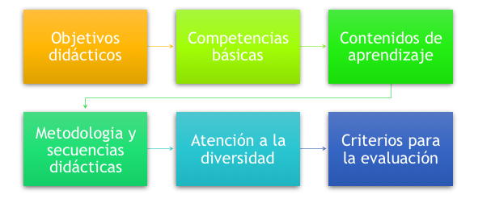

Estilos de aprendizaje
1. Activo
- Es muy espontáneo.
- Participa rápidamente de las actividades propuestas.
- Se motivan fácilmente.
- Tienen un periodo de atención corto. Necesitan cambiar constantemente de actividades.
2. Pramático
- Se pregunta el "por qué de todo.
- Aplica los conocimientos a la vida real.
- Busca “economizar” recursos para encontrar un buen resultado.
- Tiene que encontrar siempre una finalidad útil a lo que aprende .
3. Reflexivo
- Escucha antes de hablar.
- Argumenta con lo que ha escuchado.
- Son muy analíticos y buscan un hilo de conductor que relacione lo que aprenden.
4. Teórico
- Estructurado.
- Cuesta hacerle cambiar de opinión.
- Necesitan elaborar una estructura concreta.
- Tienen poca flexibilidad.
Funciones y perfil del profesorado de infantil
- Supervisión y vigilancia.
- Motivación y empatía.
- Comunicación con los padres y con el niño.
- Trabajo en equipo.
- Integración multicultural.
- Planificación.
- Atender las necesidades básicas de los niños.
- Buen observador (etapa del desarrollo motriz y cognitivo).
- Buena didáctica (dinámico, interactivo).
- Características personales (paciencia,...).
Funciones y perfil del profesorado de primaria
- Comunicación.
- Adaptabilidad.
- Organización y planificación.
- Seguimiento del aprendizaje del alumnado.
- Creatividad.
- Hacer reflexionar al alumno.
- Incentivo y motivador.
- Cantidad y calidad de las interacciones y diálogos. Demostrar disponibilidad "fuera de clase".
- Entusiasmo por la materia.
- Calidad de la exposición verbal.
Componentes básicos de la programación de una unidad didáctica
